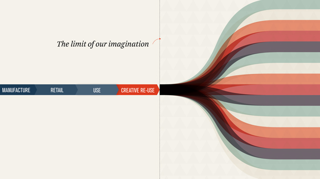
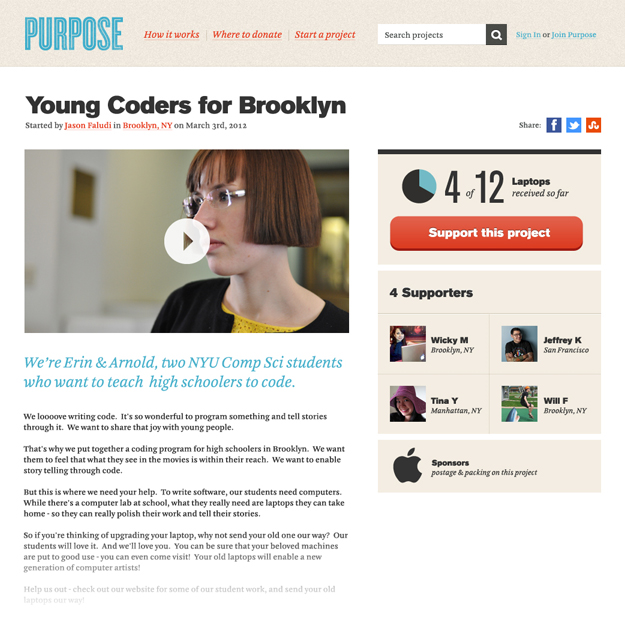
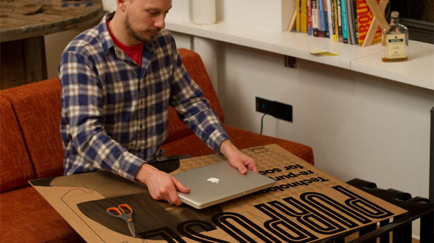

MFA IXD
Purpose
A platform bringing together consumers, makers, and manufacturers to enable creative reuses for unwanted technology.
Makers share creative reuse ideas to a broad community. In turn, the community helps realize maker-ideas: consumers donate technology otherwise bound for the global waste-stream and manufacturers fund packaging, shipping, and handling as an opportunity to practice corporate social responsibility.
The project was completed as part of GOOD Magazine’s design hackathon, where we spent 24 hours thinking up and designing the concept. We’re fortunate to have won the Best in Show award for our efforts.
This project was a collaboration with Tony Chu, Michael Yap & Prachi Pundeer. In terms of design deliverables I was primarily responsible for the web interface and video production.